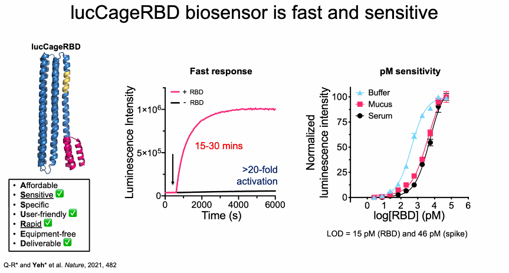

Study Guide
Contents
2.9. Study Guide#
2.9.1. First Order Linear Models#
2.9.1.1. State Space#
What are the units of \(a\)?
What are the units of \(b\)?
What is the steady state gain?
What is the time constant?
2.9.1.2. Gain/Time-Constant#
What are the units of \(\tau\)?
What are the units of \(K\)?
Convert to state space form.
2.9.1.3. Parameter Estimation#
Estimate the Gain and Time Constant from

What is the value of \(K\)? (be careful with sign)
What is \(\tau\)?
Does a first order model do an adequate job of modeling this system?
2.9.1.4. Exercise#
Consider a cup of coffee of volume \(V\), mass specific heat transfer coefficient \(C_p\), heat transfer coefficient \(U\), area \(A\), and ambient temperature \(T_{amb}\).
Rewrite this in the standard form. What is \(x\)? What are \(a\) and \(b\)?
Rewrite in gain/time constant form. What are \(\tau\)?
Suppose we have a cup that holds 250 ml. The heat capacity of water is 4.2 J/g, and the surface area is 0.03 square meters. You measure the first order time constant to be 12 minutes. Estimate \(U\).
2.9.1.5. Exercise#
Suppose the speed of a car, \(x\), in response to a throttle position \(u\) has been found to satisfy the equation
The units of \(t\) are seconds, speed is measured in miles per hour, and throttle position in percent of full scale.
a. What are the units of \(x\) and \(u\)?
b. What are the units of the \(a\) and \(b\) coeffients?
c. What is value and units of the steady-state gain?
d. What is the maximum speed of the car?
e. Rewrite the state space equation using metric units of km/hour.
Work out the answers before attempting any simulations.
Let’s continue with the example of the car. Suppose you are driving at a steady speed of 60 mph then take your foot off the throttle at \(t = 20\) seconds.
a. What was the initial throttle setting before 20 seconds?
b. What is the throttle setting after 20 seconds?
c. For the purposes for determining the response after 20 seconds, what is the initial condition?
d. Is the response exponentially decaying, constant, or exponentially increasing?
2.9.1.6. Exercise#
An experiment is performed in which a car is run at constant speed on a test track, and the throttle setting is suddenly changed to zero. The recorded speed is shown in the following plot. From this plot, what is the intial condition? What is the first order time constant?

2.9.1.7. Exercise#
A recent paper demonstrated the use of engineered proteins to create a luminescent biosensor for the detection of the COVID-19 virus. The step response of the biosensor is shown in the chart at the center of this figure.

Assume a first-order model would be used to describe the dynamics. What is the corresponding time constant? How much time should be allowed for the meaasurement to reach 95% of the steady-state response?
For the same biosensor data, assume the step input of virus has arbitrary units \(U = 10000\). For a model in the form
what the values of \(a\) and \(b\)?
Again for the same biosensor data and \(U = 10000\), what are the values \(K\) and \(\tau\) for a model written in the form
Prepare a simulation of the model you have created for the biosensor. (On the quiz, you might be given a simulation model and asked to add parameter values, diagnose a problem, and recreate the model equations.)
2.9.2. State Space Modeling#
Suppose the Hare and Lynx model could be reduced to the form
where \(u\) is a the loss of hare due to other predators. Rewrite this expression in state space form
what are the steady states when \(u=0\)?
what is \(x\)?
what are \(A\) and \(B\).
Suppose \(H\) is measurable. What is \(C\) for the model
What is \(C\) if both \(H\) and \(L\) are measurable?
2.9.3. TCLab#
Review your projects. Be sure you can relate the parameters \(U_a\), \(U_b\), \(U_c\) and heat capacities to observable behaviors.